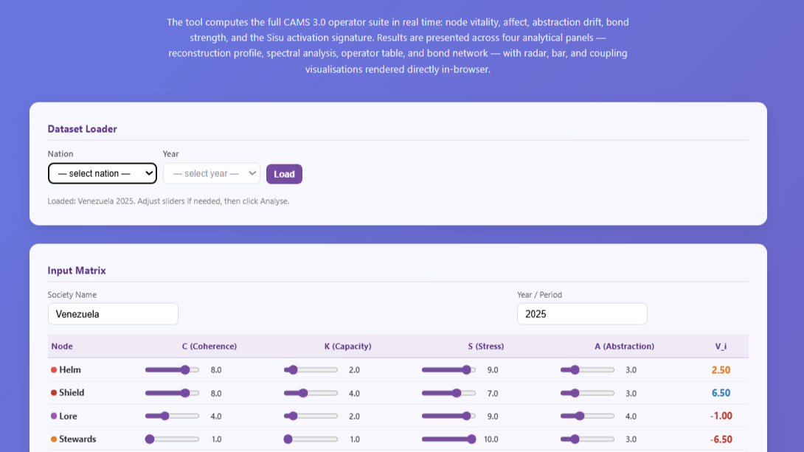

Load a dataset. Turn the numbers back and examine the world they came from.
The CAMS Interpreter is a data explorer — a way to load a society's data and immediately see what those numbers are actually saying about how that society functions, strains, and holds itself together.
The tool draws on the Complex Adaptive Model of Societies, a framework that treats nations, historical civilisations, and organisations as thermodynamic systems — governed by the coordination dynamics common to any complex adaptive structure, from ecosystems to nervous systems. CAMS scores eight functions across four dimensions. From those raw scores, a suite of derived operators produces a readable picture of systemic health, vulnerability, and trajectory.
Four Dimensions
C
Coherence
Internal alignment — how well a node holds together
K
Capacity
Collective efficacy — what the node can actually do
S
Stress
Structural and affective load — what is bearing down on the node
A
Abstraction
Narrative, ideology, and codified meaning — the symbolic layer
What It Makes Visible
What the CAMS Interpreter reveals is the correspondence between metrics and real political epiphenomenon.
A node where Capacity is collapsing under rising Stress is not an abstract algebraic event — it is a workforce being overwhelmed, a bureaucracy unable to perform, an institution losing its people.
A node where Abstraction has decoupled from Coherence is where ideology is drifting free of grounded practice, or where official narratives no longer match material experience. Bond Strength measures how tightly the invariant eight nodes couple — the connective tissue of a society's coordination architecture.
The Interpreter allows you to load national datasets, spanning both contemporary states and ancient civilisations, select a year, and see the coordination state: node vitality, affect balance, abstraction drift, coupling structure, and the Sisu — a signature that flags antifragility under pressure.
Four Analytical Panels
Panel 1
Reconstruction Profile
Node vitality across all eight functions — the full health vector at a glance. Radar and bar visualisations rendered directly in-browser.
Panel 2
Spectral Analysis
Affect balance and abstraction drift — where the system's emotional and symbolic registers sit relative to its material base.
Panel 3
Operator Table
The full CAMS 3.0 operator suite computed in real time: node value, bond strength, coordination phase, and the Sisu activation signature.
Panel 4
Bond Network
Coupling visualisation — which nodes are tightly bonded and which have decoupled. The coupling structure is often the most diagnostic view.

CAMS Interpreter — Venezuela 2025 loaded. The Input Matrix shows all eight nodes with adjustable sliders for C, K, S, and A. V_i (node value) updates in real time. Helm: Capacity 2.0, Stress 9.0 — the numbers speak before the history does.
"Load a dataset. Turn the numbers back and examine the world they came from."
CAMS is not a ranking system or a final word on any society's condition. Comparative analysis using CAMS is a starting point for structured inquiry, not a verdict. Scores reflect preliminary AI assessor ratings; all outputs should be read alongside historical context, qualitative understanding, and appropriate scepticism. What the tool offers is a consistent, transparent quantitative lens — one that shows dynamics invisible to narrative-based analysis.
What the Interpreter provides
Load any society's CAMS dataset and see the full operator suite computed in real time — node vitality, affect balance, abstraction drift, bond strength
The Sisu signature flags antifragility — systems that strengthen under pressure rather than merely endure it
Four analytical panels: reconstruction profile, spectral analysis, operator table, and bond network coupling visualisation
Spans contemporary states and ancient civilisations within the same consistent frame
The tool reveals the political epiphenomenon behind the numbers — not as interpretation, but as structural correspondence